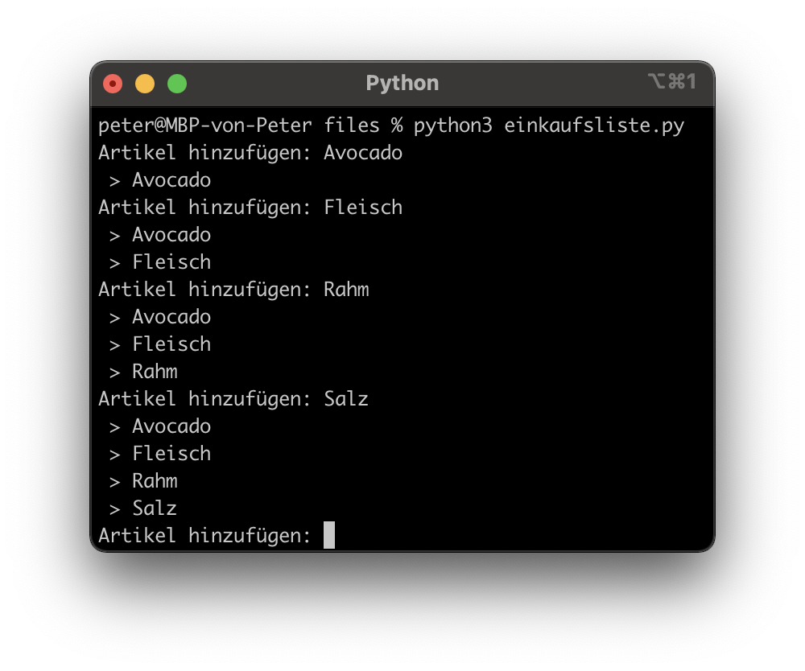
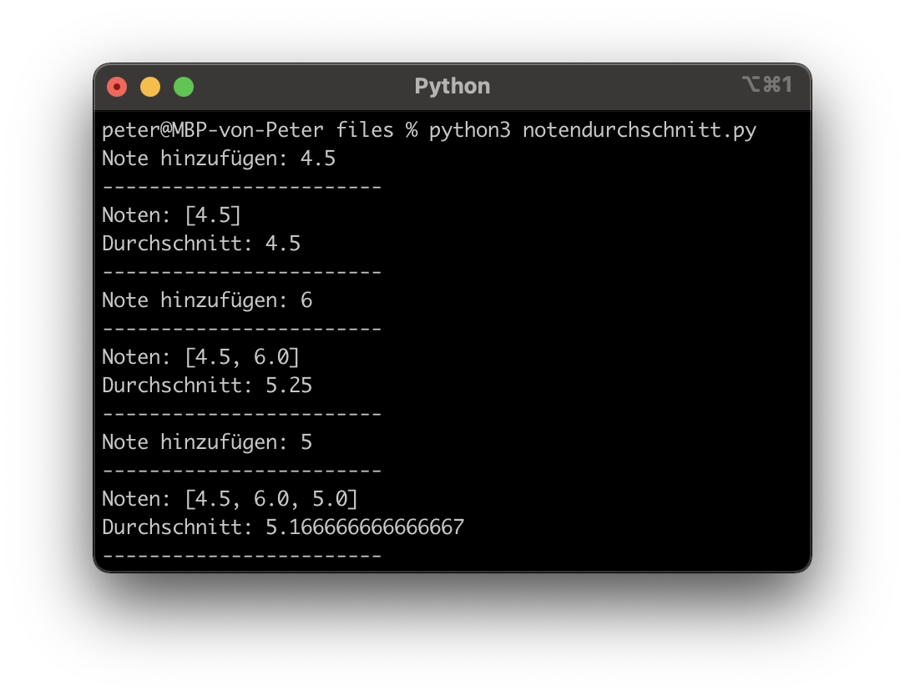

Lernziele
Sie verstehen das Prinzip von Listen und können dieses Wissen in einem Programm umsetzen
Was sind Listen?
Eine Liste speichert mehrere Elemente, z. B. eine Einkaufsliste:
- Brot
- Nutella
- Milch
- …
In Python werden Listen mit eckigen Klammern [] geschrieben:
x = ["Brot", "Nutella", "Milch",] # Definition einer Liste
print(x) # Output: "['Brot', 'Nutella', 'Milch']"Zugriff auf Listenelemente
Der Zugriff auf Listenelemente erfolgt mit einem Index. [0] ist dabei das erste Element, [1] das zweite etc.
einkaufsliste = ["Brot", "Nutella", "Milch",]
print(einkaufsliste[0]) # Output: Brot
print(einkaufsliste[1]) # Output: Nutella
print(einkaufsliste[2]) # Output: Milch
print(einkaufsliste[3]) # Output: IndexError: list index out of rangeDie Länge einer Liste erhält man mit der Funktion len()
Listen & Loops
Listen sind iterierbar, d. h. folgendes funktioniert und sollte bevorzugt werden:
Wenn jedoch der Index benötigt wird, kann auch ein “normaler” Loop mit der len()-Funktion verwendet werden:
for i in range(len(einkaufsliste)): # len() ist die Listenlänge
print(einkaufsliste[i])
print(i) # Vorteil: Man hat Zugriff auf den Index i
# Output: Brot 0, Nutella 1, Milch 2Listenelemente bearbeiten
Ein Element ändern :
einkaufsliste = ["Brot", "Nutella", "Milch"]
einkaufsliste[1] = "Bananen"
# Resultat: ['Brot', 'Bananen', 'Milch']Ein Element hinzufügen :
einkaufsliste = ["Brot", "Nutella", "Milch"]
einkaufsliste.append("Bananen")
# Resultat: ['Brot', 'Bananen', 'Milch', "Bananen"]Ein Element löschen :
Auftrag: Einkaufsliste
Programmieren sie eine Einkaufsliste, bei der sie Artikel hinzufügen können. Die Liste soll dabei nach jeder Eingabe wieder ausgegeben werden.
|  |
Tipp: Mit “while: True” wird eine Schleife unendlich oft ausgeführt und mit CTRL-C können sie das Programm trotzdem terminieren
Auftrag: Notendurchschnittsrechner
Programmieren sie einen Notendurchschnittsrechner. Das Ziel: Sie können ihre Noten eingeben und der Rechner gibt ihnen ihren aktuellen Durchschnitt zurück.
 |
 |